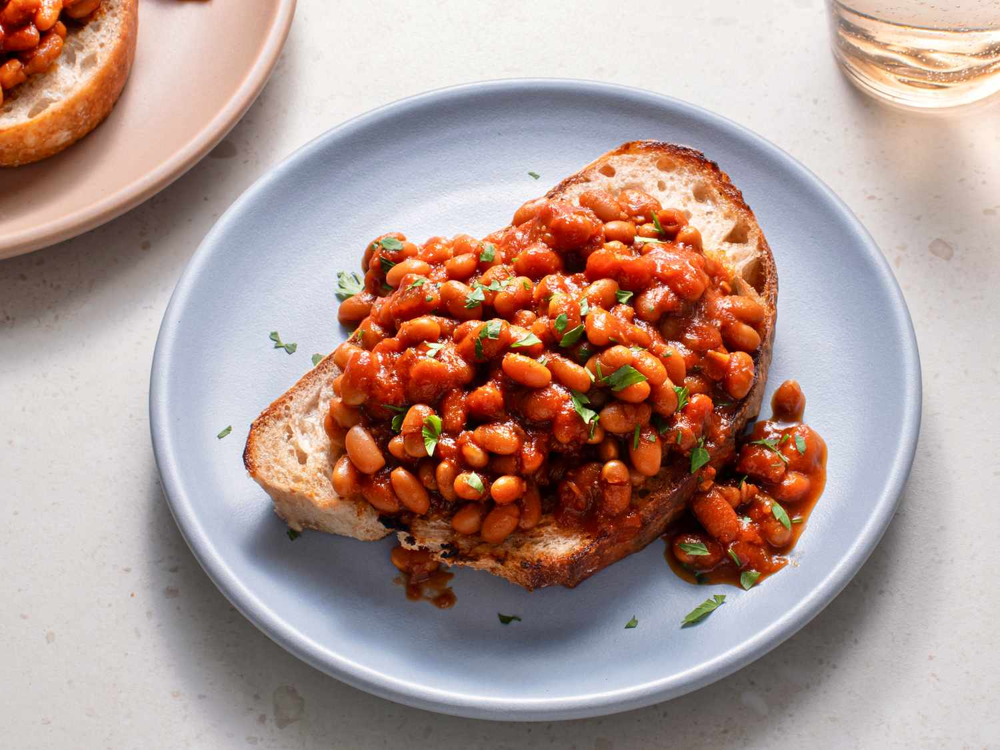

Beans on Toast

Description
Growing up, my favourite lunch on a Saturday afternoon was - you guessed it - beans on toast. There was something about the sauce and beans that really just tasted good.
This recipe is especially delicious if you use fresh sourdough bread (made from scratch or from the bakery), and you can optionally sprinkle cheddar cheese on top.
Ingredients
- Baked beans (any brand)
- Bread (sourdough preferred)
- Butter
- Cheese (optional)
Steps
- Put the beans on a low heat, making sure to stir regularly. Do not let the beans reach a boil as this impacts the flavour and texture negatively.
- Toast your bread to your preferred browness.
- Butter the hot toast.
- Pour baked beans evenly over the buttered toast.
- Grate cheese over the beans on toast to taste.
- Enjoy!
Back to recipes page